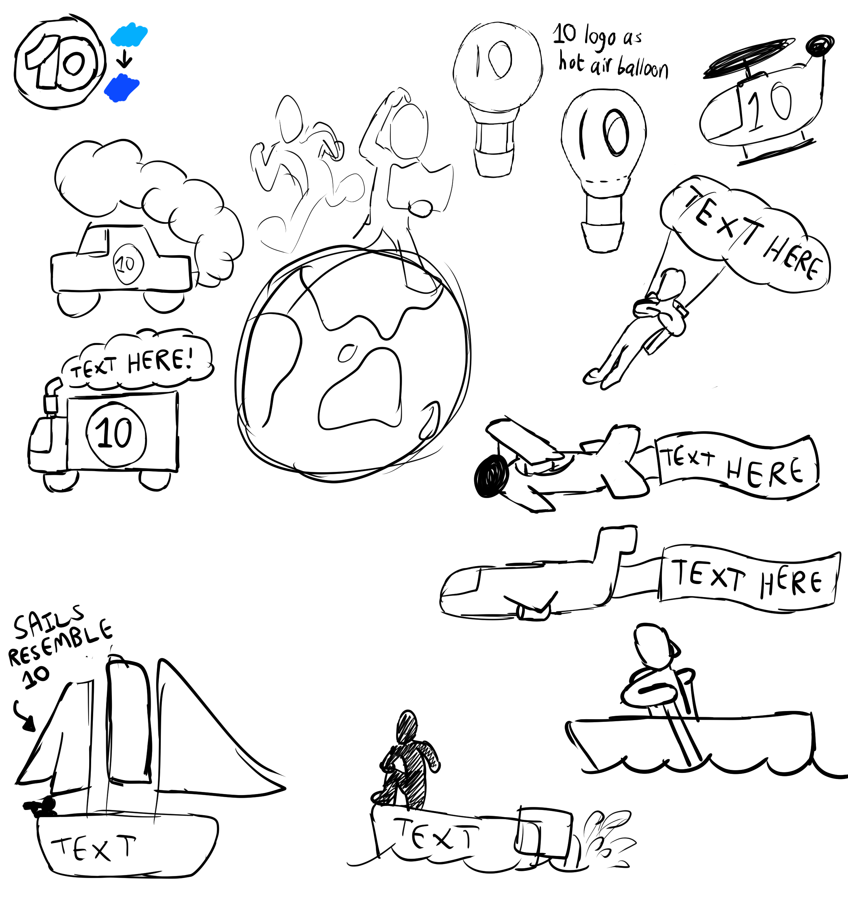

Neither this site, nor I, have any official association with Channel 10 or any related television programs; this is simply part of my Visual Design Portfolio.
This project involved the designing of a billboard for a new Channel 10 show called "Race Around the World". The billboard is to contain various vehicles and names of locations.
Idea generation consisted mostly of thinking up of as many vehicles as I could think of, as well as conceptualising a cental logo. I also prepared the colour Pallete for Channel 10's logo.
Most of the vehicles had been designed around the idea of including text on them. However, I only did this with the hot air balloon, as I found it to be the most appropriate for the job (large, blank space).
To begin, I drew all the vehicles/people to be used on the billboard in a separate document. I began with rough sketches, smoothed the lines, added colour, and finally shaded and added extra detail.
Later on, I changed the hot air ballon's colour to resemble Channel 10's logo; I had previously coloured it to reflect the show's logo.
Aside from assembling the previously created assets, the final billboard involved creating a central logo and title. I chose for the logo to resemble the figures running around the world I had conceptualised in the drafts.
Finally, I added a background in the form of a world map, marking out significant locations.
(2D World Map referenced from gallery.hd.org here)